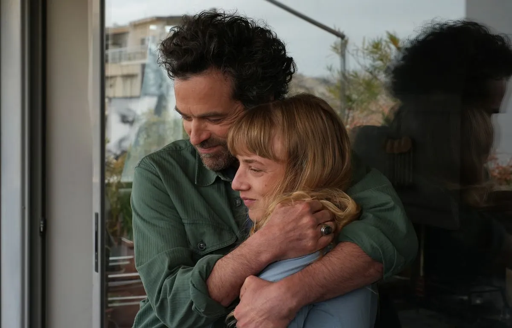

I.Harsin / Sipa
Des jeunes inscrits à Pôle
emploi poussent les portes du
Crillon P.3
La mobilisation à la francaise,
un art qui séduit nos voisins
P.4

L Vu / TF1
Bas les masques
sur les costumes
de << Mask Singer >> P.10

Jérôme Plon / Amazon Studios
VOIR
ATHÈNES
ET MÛRIR
Vingt ans après << L'Auberge espagnole >>
Cédric Klapisch revient avec
<< Salade grecque >>
et fait le lien entre deux générations. P.8